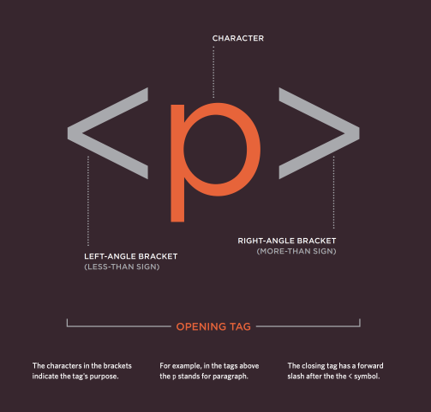
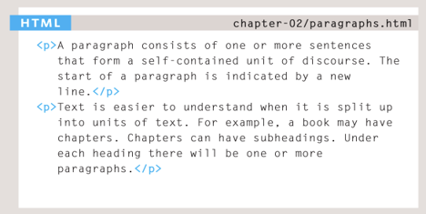
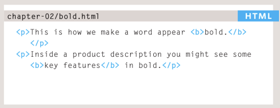
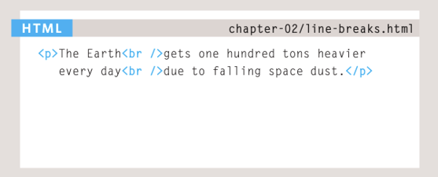
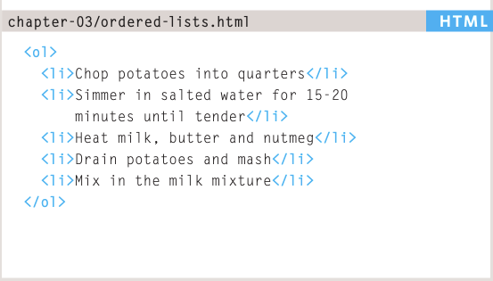
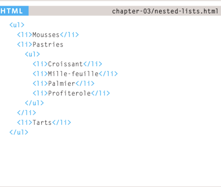
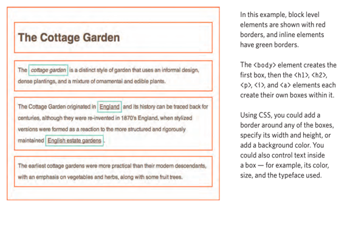
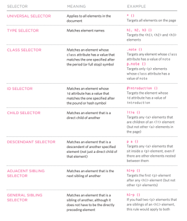
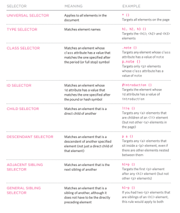

- Variables booleanas
- null
- Variables de tipo Undefined
- Variables Numericas
- Variables BigInt
- Variables de texto
- Variables de tipo simbolo
- Variables de tipo objeto
- Variables de tipo funcion
- Declaración for
- Declaración Do-While
- Declaración While
- Declaración Labeled
- Declaración Continue
- Declaración for-in
- Declaración for-of
- HTML
- How pages use structure
- A closer look at Tags
- Text, Body, Head and Title
- Headings
- Paragraphs and Bold
- Line Breaks and Horizantal Rules
- Lists
- Order lists
- Unordered Lists
- Nested Lists
- Links
- Images
- Understanding CSS: Thinking Inside the Box
- Using external CSS
- Some properties CSS
- PSet_001
- Unary Operators
- Boolean Values
- Logical Operators
- Short-circuiting of logical Operators
- Intro Functions
Variables en JavaScript
Las variables en JavaScript son una herramienta que se utiliza en la programación para almacenar variables en la memoria y poder identificarlos con un nombre en específico.
Variables Booleanas
Las variables booleanas sirven para almacenar un valor que pueda ser "true" o "false". Para declarar una variable booleana se utiliza el comando "Boolean".
Variables Null
Las variables null se utilizan para almacenar una variable que no tiene ningun valor. Este tipo de variables nos sirve al usar nodos, ciclos, etc. Para declarar una variable null se utiliza el comando "null".
Variables de tipo undefined
Las variable de tipo undefined son variables que aun no han sido inicializadas. Para una variable undefined se utiliza el comando "undefined".
Variables Numericas
Las variables numericas sirven para almacenar numeros enteros o decimales. Para una variable numerica se utiliza el comando "number".
Variables BigInt
Las variables numericas sirven para almacenar numeros más grandes del que tiene permitido "number". Para esta variable se utiliza el comando "BigInt".
Variables de texto
Las variables de texto sirven para almacenar cualquier letra, frase, palabra o secuencia de texto. Para esta variable se utiliza el comando "String".
Variables de tipo Symbol
Las variables de tipo symbol sirven para almacenar valores que sean unicos e irrepetibles. Cada llamada de la variable siemre retornará el mismo simbolo. Para esta variable se utiliza el comando "Symbol".
Variables de tipo Objeto
Las variables de tipo objeto sirven para almacenar datos y entidades más complejas. Para esta variable se utiliza el comando "Object".
Variables de tipo Funcion
Las variables de tipo función sirven para almacenar funciones dentro de una variable.. Para esta variable se utiliza el comando "function".
Bucles en JavaScript
Los bucles en programacion nos aydan a hacer una acción en esecifico un numero "n" de veces. En esta sección se presentaran las diferentes formas de declarar un bucle en JavaScript
Declaración for
Un ciclo for se repite hasta que una condición ya preescrita no se cumpla.
Ejemplo:
for ([expresiónInicial]; [expresiónCondicional]; [expresiónDeActualización])
Declaración do-while
El bucle do-while se repite hasta que una condición ya preescrita no se cumpla. La diferencia es que primero ejecuta la acció y las veces siguientes ya las evalua.
Ejemplo:
do
expresión
while (condición);
Declaración do-while
El bucle while se repite hasta que una condición ya preescrita no se cumpla. Este bucle si evalua la primera entrada antes de ejectar la accion
Ejemplo:
while (condición)
expresión
Declaración labeled
Una label da una instrucción con una acción que te permite volver a usar el mismo bcle en otra parte del codigo. Puedes usar break o continue para renaduar o terminar el bucle.
Ejemplo:
label : instrucción
Declaración continue
La declaración continue sirve para renaduar las acciones que hace un bucle despues de haber sido terminado por break.
Ejemplo:
continue [label];
Declaración for-in
La declaración for-in repite una variable sobre todas las propiedades de un objeto.
Ejemplo:
for (variable in objeto)
instrucción
Declaración for-of
La declaración for-of crea un bucle que se repite sobre objetos iterables (arrays, mas,sets,etc)
Ejemplo:
for (variable of objeto)
expresión
----H T M L----
¿Qué es HTML?
You may know that HTML stands for HyperText Markup Language. The HyperText part refers to the fact that HTML allows you to create links that allow visitors to move from one page to another quickly and easily. A markup language allows you to annotate text, and these annotations provide additional meaning to the contents of a document. If you think of a web page, we add code around the original text we want to display and the browser then uses the code to display the page correctly. So the tags we add are the markup.
How pages use structure
You may know that HTML stands for HyperText Markup Language. The HyperText part refers to the fact that HTML allows you to create links that allow visitors to move from one page to another quickly and easily. A markup language allows you to annotate text, and these annotations provide additional meaning to the contents of a document. If you think of a web page, we add code around the original text we want to display and the browser then uses the code to display the page correctly. So the tags we add are the markup.
A closer look at Tags

Text Body, Head & Title
You met the
element in the first example we created. Everything inside this element is shown inside the main browser window.Before the body element you will often see a head element. This contains information about the page (rather than information that is shown within the main part of the browser window that is highlighted in blue on the opposite page). You will usually find a title element inside the head element.
The contents of the title element are either shown in the top of the browser, above where you usually type in the URL of the page you want to visit, or on the tab for that page (if your browser uses tabs to allow you to view multiple pages at the same time).

Headings
HTML has six "levels" of headings:
h1 Is used for main headings. h2 is used for subheadings If there are further sections under the subheadings then the h3 element is used, and so on...
Paragraphs & Bold
To create a paragraph, surround the words that make up the paragraph with an opening p tag and closing /p tag. By enclosing words in the tags b and /b we can make characters appear bold.
 Line Breaks and Horizantal Rules
If you wanted to add a line break inside the middle of a paragraph you can use the line break tag br / . To create a break between themes — such as a change of topic in a book or a new scene in a play — you can add a horizontal rule between sections using the tag.

Lists
HTML provides us with three different types:
Ordered lists are lists where each item in the list is numbered. For example, the list might be a set of steps for a recipe that must be performed in order, or a legal contract where each point needs to be identified by a section number.
Unordered lists are lists that begin with a bullet point (rather than characters that indicate order).
Definition lists are made up of a set of terms along with the definitions for each of those terms.
Order Lists
The ordered list ol is created with the element. Each item in the list is placed between an opening li tag and a closing /li tag. (The li stands for list item.)
Unordered Lists
The unordered list is created with the ul element. Each item in the list is placed between an opening li tag and a closing li tag. (The li stands for list item.)

Nested Lists
You can put a second list inside an li element to create a sublist or nested list.
links
Links are the defining feature of the web because they allow you to move from one web page to another — enabling the very idea of browsing or surfing.
You will commonly come across the following types of links:
Links from one website to another
Links from one page to another on the same website
Links from one part of a web page to another part of the same page
Links that open in a new browser window
Links that start up your email program and address a new email to someone
Links are created using the a element. Users can click on anything between the opening a tag and the closing /a tag. You specify which page you want to link to using the href attribute.

When you are linking to other pages within the same site, you do not need to specify the domain name in the URL. You can use a shorthand known as a relative URL.
Relative URLS
When linking to other pages within the same site, you can use relative URLs. These are like a shorthand version of absolute URLs because you do not need to specify the domain name.

Before you can link to a specific part of a page, you need to identify the points in the page that the link will go to. You do this using the id attribute (which can be used on every HTML element).
You can see that the h1 and /h1 elements in this example have been given id attributes that identify those sections of the page.
The value of the id attribute should start with a letter or an underscore (not a number or any other character) and, on a single page, no two id attributes should have the same value.

Images
You will also often see an img element use two other attributes that specify its size: height This specifies the height of the image in pixels. width This specifies the width of the image in pixels.

Understanding CSS: Thinking Inside the Box
The key to understanding how CSS works is to imagine that there is an invisible box around every HTML element.
CSS allows you to create rules that control the way that each individual box (and the contents of that box) is presented.
Using external CCS
The link element can be used in an HTML document to tell the browser where to find the CSS file used to style the page. It is an empty element (meaning it does not need a closing tag), and it lives inside the element. It should use three attributes:
Href: This specifies the path to the CSS file (which is often placed in a folder called css or styles).
Type: This attribute specifies the type of document being linked to. The value should be text/css.
Type: This attribute specifies the type of document being linked to. The value should be text/css.
Rel: This specifies the relationship between the HTML page and the file it is linked to. The value should be stylesheet when linking to a CSS file.

 


Some properties CSS
display: flex; flex-direction: column; justify-content: center; align-items: center; font-family: Source serif Pro text-align: center; padding: 5px 20% 0px 20%;
PSet_001
Build a web page like medium one using the tools you saw during the presentation
https://towardsdatascience.com/the-math-behind-neural-networks-a34a51b93873#2077
Operators in JavaScript
Unary Operators
One example is the typeof operator, which produces a string value naming the type of the value you give it.
console.log(typeof 4.5)
// → number
console.log(typeof "x")
// → string
Boolean Values
It is often useful to have a value that distinguishes between only two possibilities,
like “yes” and “no” or “on” and “off”. For this purpose, JavaScript has a Boolean type,
which has just two values, true and false, written as those words.
Comparison
console.log(3 > 2)
// → true
console.log(3 < 2)
// → false
console.log("Garnet" != "Ruby")
// → true
console.log("Pearl" == "Amethyst")
// → false
Logical Operators
JavaScript supports three logical operators: and, or, and not. These can be used to “reason” about Booleans.
The && operator represents logical and. It is a binary operator, and its result is true only if both the values given to it are true.
console.log(true && false)
// → false
console.log(true && true)
// → true
The || operator denotes logical or. It produces true if either of the values given to it is true.
console.log(false || true)
// → true
console.log(false || false)
// → false
Not is written as an exclamation mark (!). It is a unary operator that flips the value given to it—!true produces false and !false gives true.
The last logical operator we will look at is not unary, not binary, but ternary, operating on three values. It is written with a question mark and a colon, like this:
console.log(true ? 1 : 2);
// → 1
console.log(false ? 1 : 2);
// → 2
Short-circuiting of logical Operators
The logical operators && and || handle values of different types in a peculiar way.
They will convert the value on their left side to Boolean type in order to decide what to do, but depending on the operator and the result of that conversion, they will return either the original left-hand value or the right-hand value.
console.log(null || "user")
// → user
console.log("Agnes" || "user")
// → Agnes
The rules for converting strings and numbers to Boolean values state that 0, NaN, and the empty string ("") count as false, while all the other values count as true.
The ?? operator resembles ||, but returns the value on the right only if the one on the left is null or undefined, not if it is some other value that can be converted to false. Often, this is preferable to the behavior of ||.
console.log(0 || 100);
// → 100
console.log(0 ?? 100);
// → 0
console.log(null ?? 100);
// → 100
Intro Functions
Functions are one of the most central tools in JavaScript programming. The concept of wrapping a piece of program in a value has many uses. It gives us a way to structure larger programs, to reduce repetition,
to associate names with subprograms, and to isolate these subprograms from each other.
const square = function(x) {
return x * x;
};
console.log(square(12));
// → 144